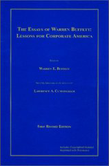

Talking Down To Customers
As a consumer I can't stand being lied to. When a company lies to me I make every possible effort to end my relationship with them (which, unfortunately, doesn't leave me with many options). What I hate even more than lying is being talked down to. It seems like almost every large company does it to greater or lesser extent to their employees as well as their paying customers - together the most valuable assets a company could possibly hold (unless it's sitting on an oil field or has a monopoly on mining diamonds).
This strategy is usually recognizable the moment you have to communicate with them. First, in a detached, formal tone, as if there isn't a single living human being working for the company, they tell you how much they value your business and how hard they're working so you get the bang for your buck. Immediately after that, they contradict themselves making you feel like a five year old child.
Today I received a letter from Oxford Health Plans which is a little gem that perfectly illustrates how not to communicate with customers. I guess the MBA who approved the letter slept through the class that addressed this particular issue. Here is a small excerpt:
Providing you with comprehensive access to a broad network of laboratories is our priority. Periodically, we evaluate our network and relationships to ensure that they continue to offer the quality, convenience and affordability that you have come to expect.
...
Effective January 1, 2007, Quest Diagnostics will no longer participate in the Oxford Health Plans provider laboratory network.
The first paragraph explains that there is a faceless corporation working around the clock to get me and my family cheap, high quality testing. The paragraph immediately after that tells me that they've cancelled their contract with the largest diagnostics company in the United States, the one pretty much all doctors in my area have favored for as long as I could remember.
The letter ends with a warm reassurance that I could contact Oxford and they'll resolve all my problems:
Our goal is to make this transition seamless for you while continuing to deliver the quality, affordability and choice that you have come to expect. If you have questions about these changes or need additional assistance, please call Customer Service at the toll-free number on your Member ID card.
 How nice. They'll be glad to talk to me but provide no address or e-mail and I'll have to make an effort to find their phone number (a brilliant appeal to people's laziness in an attempt to keep to a minimum a mountain of phone calls that are sure to follow). If I ever get around to calling them the person on the other end of the line will likely have no clue what I'm talking about - she didn't write the letter and doesn't make the decisions. No, I can't talk to the person who makes the decisions. No, I can't talk to the supervisor, he's on vacation. No, there are no extensions, I'll have to call the general customer service number and ask for Mary. And we all know what would happen if I did have call back. No, Mary doesn't work here, we have many different call centers. Sorry sir.
Oxford can afford to do this - most of their members are customers indirectly, through the employers. I can't switch my health insurance company if I wanted to. Nevertheless, my good faith in Oxford is ruined. All they had to do was write a letter in a way that makes me feel like there is a living, breathing person behind it, and tell me the truth - that their contract with Quest got too expensive and the cost for them is so high they made the tough decision to inconvenience their customers. Who needs to go to business school when the real business lessons are a mailbox away.
Comments?
If you have any questions, comments, or suggestions, please drop a note at coffeemug@gmail.com. I'll be glad to hear your feedback.